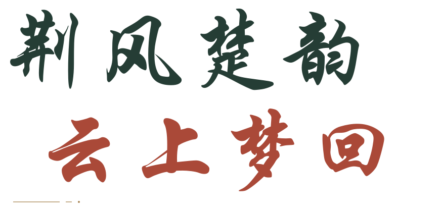

湖北 · 非遗数字展馆 VOL. 01

JingchuReverie.
从泥土的温度，到木纹的故事，再到青铜的回响。
从145条地区项目记录出发，读懂技艺，也规划自己的文化之旅。
荆楚百艺
看见器物的形
读懂技艺的心
泥与火之间，留下生活的形状
楚01
竹溪 · 毛家窑
陶器烧制技艺 / 模型预览泥土成器✳木纹生花✳青铜有声在日常里，遇见非遗
01 / COLLECTION
走近一门技艺
从器物到乡音，循着线索，
读懂荆楚的生活与传承。
没有找到相关展品。试试“竹溪”“木雕”或清空搜索。
146条地区记录与专题，循着器物、乡音与风俗，发现荆楚百艺。
02 / HERITAGE ON THE ROAD
循着地图，走进真实街巷
看见项目分布，选择想去的地方，
把下一站，交给清晰的方向。
MY CULTURE TRIP
我的文化行程 0 站
从地图中加入目的地，设定出发点；路线会直接画在地图上，每一站都有自己的前进方向。
选择一个推荐行程，或从地图加入目的地。
道路规划使用在线 OSRM 驾车服务，显示道路里程与估算用时；点击后仅发送所选公共目的地坐标。可逐段打开高德，切换驾车、公交或步行导航。
我的线上阅读清单
MY CULTURE TRAIL
我的阅读清单 0 站
把感兴趣的专题加入清单，自由调整阅读顺序。
还没有添加站点。可以从非遗图鉴或地区导览中加入。
JINGCHU HERITAGE · CARTOGRAPHY
把荆楚，绘成一幅幅地图从全省分布到衣食住行，浏览团队制作的六幅非遗专题作品。
03 / CLOUD GALLERY
换个视角，走近一门技艺
器物可细看，技艺有来处。
器物精选
04 / WATCH AND DISCOVER
把乡音，留在耳边
从一段戏曲影像，
发现声音与表演的关系。
视频将由你点击后加载，不随首页自动下载。
05 / FIELD NOTES
让发现，
留在手记里。
读完资料，记下一次探索；
从三题入门到十题挑战，回望技艺背后的发现。
0
份资料已读 / 共 146 份
记录仅保存在当前浏览器，不需要登录。
知识小测
等你落笔我的练习记录 尚无成绩
- 完成一次练习，记录会出现在这里。